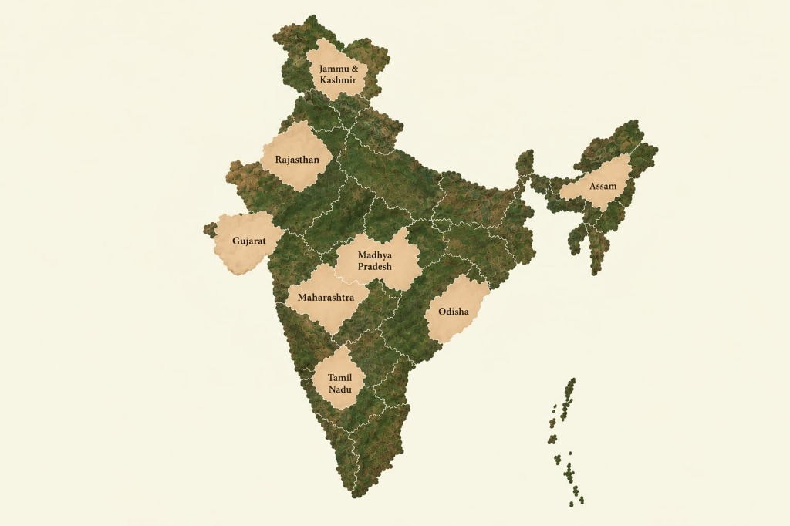
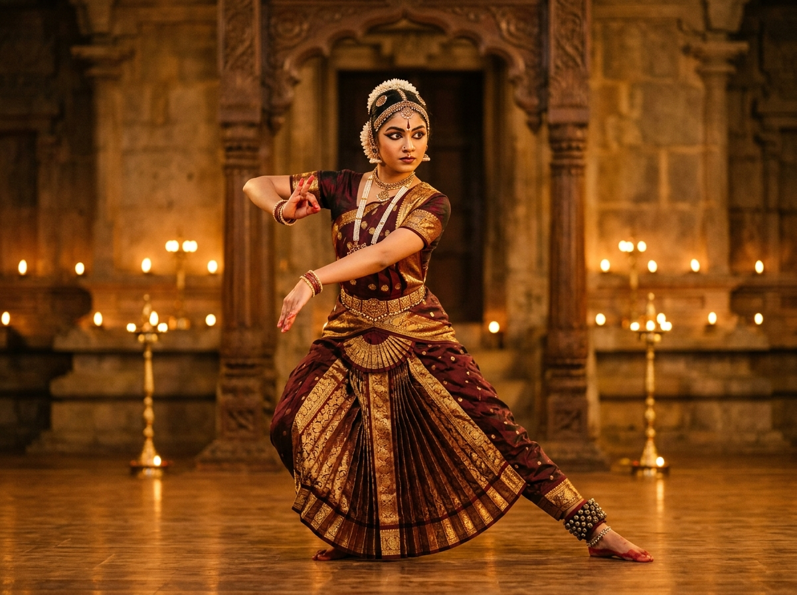
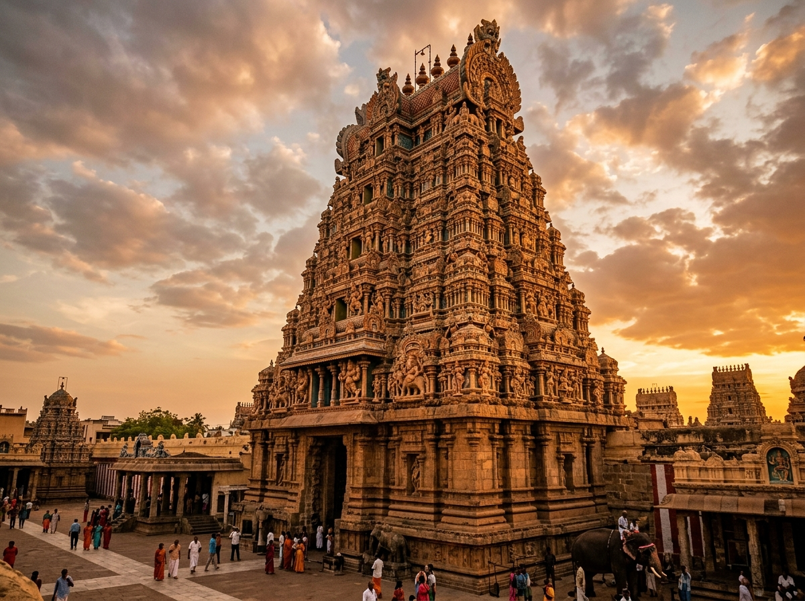
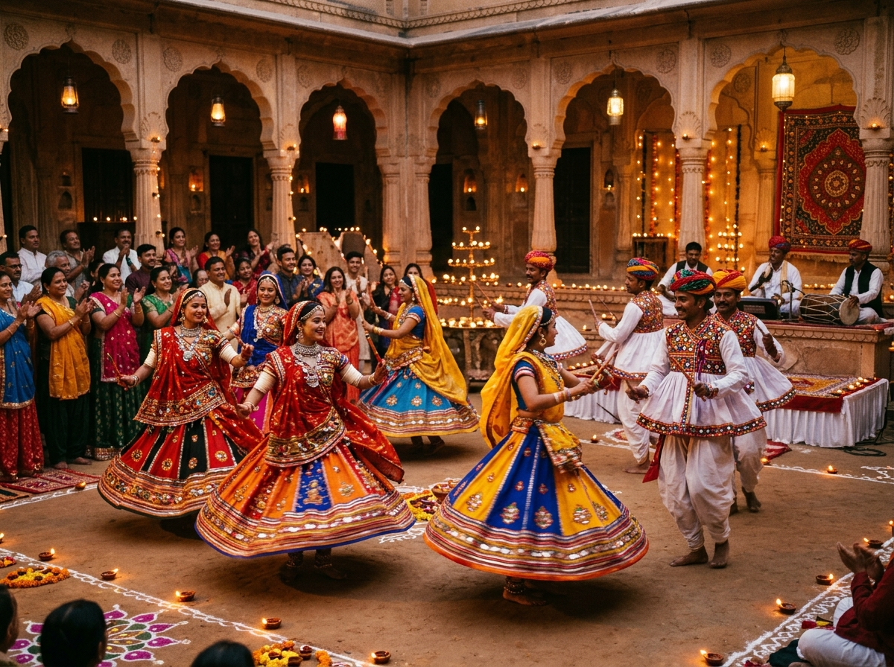
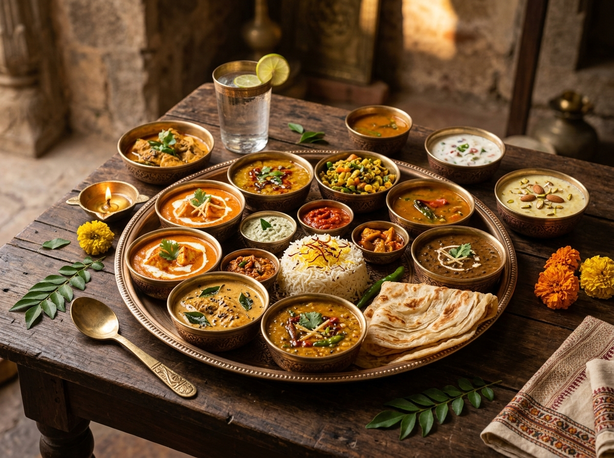

Choose a region and begin your cultural journey.

Traditionally painted by village women on fresh mud walls during festivals, artists use natural pigments ground from turmeric, indigo, soot, and marigolds with twig brushes to illustrate sacred nature and ancient folklore.
Explore living arts, ancient sanctums, and timeless celebrations.

Performing ArtsDiscover the 8 classical dance traditions codified over 2,000 years ago, where intricate footwork and mudras narrate sacred epics.

Sacred ArchitectureExplore rock-hewn sanctums, towering sculpted gopurams, and acoustic stone pillars engineered across the Chola and Vijayanagara eras.

Living TraditionsStep inside vibrant communal celebrations, from ecstatic Garba circles and Pushkar's camel gathering to Kerala's trance-like Theyyam nights.

Culinary HeritageTaste ancient spice routes across diverse regional thalis, temple prasad recipes, slow-cooked royal Wazwan, and coastal delicacies.